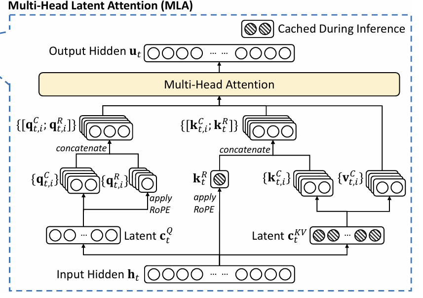
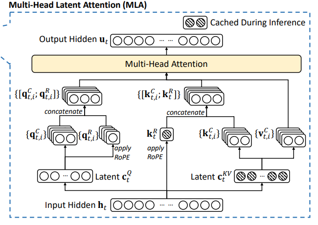
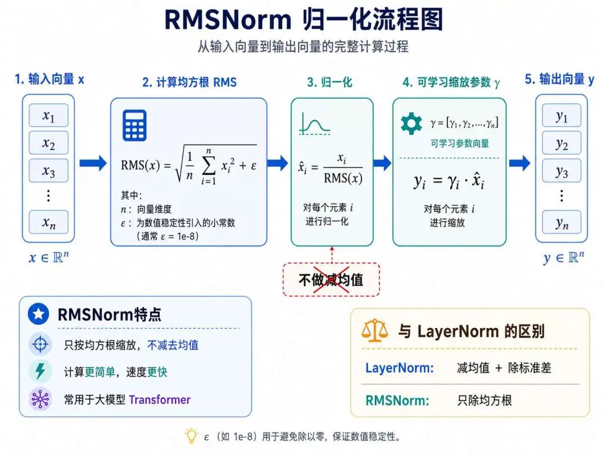
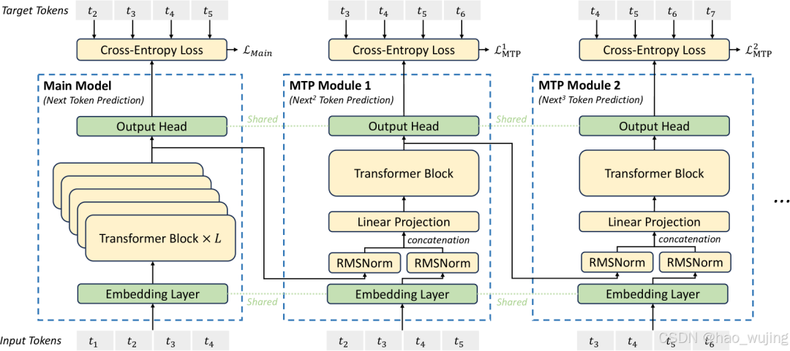

DeepSeek R1 是卓越的技术创新，其开源行为点燃了全球开发者热情，推动了思维链（Chain-of-Thought）和强化学习技术的应用浪潮。——Nvidia创始人黄仁勋
上一篇我们从整体结构上对比了 DeepSeek 与标准 Transformer 的差异，这一篇我们继续深入，聚焦到注意力机制，看看 KV Cache 这个关键瓶颈以及 DeepSeek 是如何应对的。
关于多头自注意力机制，我们在transformer那一章节中有过非常详细的讨论，我们当时提到过自注意力机制里面有三个核心的矩阵：Q、K、V，针对每一个token多头注意力机制都会产生一组Q、K、V。
KV矩阵引发的问题
这样就带来了一些问题，首先很显著的问题是，这些Q、K、V会占用很大的显存空间，
这样就带来了一些问题，首先很显著的问题是，在大模型自回归推理过程中，真正需要长期缓存、并且会随着上下文长度不断增长的，主要是历史 token 的 K 和 V，也就是我们常说的 KV Cache。Q 通常只在当前生成这一步时计算，参与完注意力计算后就可以释放，并不会像 K/V 一样持续累积。
我们以Qwen2.5 7B为例，一个序列长度为1024的句子（token化之后），在一次推理的过程中，K和V这类矩阵将要占用多少显存空间？首先显存占用的计算公式如下：
$$ \text{显存占用 (字节)} = 2 \times \text{层数} \times \text{KV 头数} \times \text{头维度} \times \text{序列长度} \times \text{批次大小} \times \frac{\text{数据类型位数}}{8} $$结合 Qwen2.5-7B 的具体参数：
代入公式计算，单 token 预计占用：
$$ 2 × 28 × 4 × 128 × 1 × 2 = 57,344 字节 ≈ 0.055 MB $$1024个token总占用则为：
$$ 57,344 × 1024 = 58,720,256 字节 \approx 56 \text{ MiB} $$因此，Qwen2.5-7B 在 1024 序列长度下，KV Cache 显存占用约为 56MiB，换算成十进制大约是 58.7MB。
如果是10240长度，也就是接近10k长度的提示词，KV Cache 大约是 560MiB 左右，也就是接近 0.55GiB，而不是简单粗略地按 1GB 来算。
这还只是一个用户使用的情况下，如果是100个用户呢？显存占用就会随着并发数继续线性放大，显存压力会非常明显。
在算力资源和显存资源都非常宝贵的背景下，哪怕几百MB的 KV Cache 优化，也会在高并发、长上下文推理场景中变得非常重要。
为了节省显存空间的占用，神经网络科学家们开始思考，怎么从矩阵的角度来做文章，首先他们猜测大矩阵中存在信息冗余，于是他们提出了低秩分解的概念。

要掌握低秩分解的概念，首先要了解什么是秩？什么是低秩？什么是高秩？
秩是矩阵中真正有用的独立信息数量。想象一个团队开会讨论问题，如果每个人都在重复别人的话，实际独立观点可能只有几个 → 秩就是核心观点的数量。
在数学上，秩 = 矩阵中线性无关的行（或列）的最大数量。
$$ 矩阵 A = \begin{bmatrix} 1 & 2 \\ 3 & 6 \end{bmatrix} $$上面这个矩阵中，第二行是第一行的3倍，线性有关，因此实际只有1个独立行，因此秩=1。
那什么是高秩呢？矩阵中几乎每一行/列都是独特信息，难以压缩。例如加密的随机数据（如验证码图片），每个像素都独立随机 ，无模式可循。
它的特点是信息完整：无冗余，所有数据都重要（如加密文件、随机矩阵）。
那什么是低秩呢？矩阵的真实信息量远小于其尺寸，能用少量核心模式表示整体。
比如用两个小矩阵 U （核心模式）和 V （组合方式）近似原矩阵：
$$ M_{1000 \times 1000} \approx U_{1000 \times 10} \cdot V_{10 \times 1000}^T $$这样一分解存储量从100万降到2万： $M_{1000 \times 1000}$ 共100万个元素，而 $U_{1000 \times 10} \cdot V_{10 \times 1000}^T$ 只有2万个元素，信息量立马降低98%。
所以秩的本质就是“信息密度”，高秩信息密度密集，不可压缩，而低秩信息密度低，冗余高，可压缩。
因此多头潜在注意力（MLA）中的“潜在”指的是模型将原始的键（Key）和值（Value）信息压缩存储在一个低维的潜在空间中，而不是像传统多头注意力那样直接缓存完整的高维KV矩阵。
理解了低秩分解的原理，我们再来看看MLA是怎么利用低秩分解的方法实现了K和V的压缩。论文原文中称这种技术为低秩联合压缩（Joint Low-Rank Compression）。
首先需要说明的是KV的运用过程分为“压缩”和“解压”两个过程，先通过低秩分解的得到小矩阵，然后真正到了逐个生成token的时候，再降矩阵解压回原矩阵，进行计算。
为了便于教学和理解，我们把 MLA 理解成“先把 K/V 压缩到低维潜在空间，再在计算时恢复其表达能力”，在真实推理实现中，MLA 并不一定要显式地把完整 K/V 全部还原出来再计算。
我们先来看看“压缩”的过程，MLA将高维K/V压缩为低秩表示，本质是分解为两个小矩阵的乘积，下面有个原始的K矩阵，维度是3行4列，然后准备一个“潜在”（原本存在，但是不明显）的 $W_{down}$ 矩阵，维度是4×2，两者相乘，得到压缩的3×2的 $K_{compressed}$ 矩阵：
（1）原始K矩阵（3×4）：
$$ K = \begin{bmatrix} 0.8 & 0.2 & 0.6 & 0.9 \\ 0.3 & 0.7 & 0.4 & 0.1 \\ 0.5 & 0.9 & 0.2 & 0.3 \end{bmatrix} $$（2）下投影矩阵 $W_{\text{down}}$ （4×2）：
$$ W_{\text{down}} = \begin{bmatrix} 0.5 & 0.1 \\ 0.3 & 0.8 \\ 0.2 & 0.6 \\ 0.7 & 0.4 \end{bmatrix} $$（3）压缩后K（3×2）：
$$ K_{\text{compressed}} = K \cdot W_{\text{down}} = \begin{bmatrix} 1.23 & 1.02 \\ 0.59 & 0.85 \\ 0.78 & 0.65 \end{bmatrix} $$可以看到最原始的的K矩阵为12个元素，这样存储量从12元素→6元素（减少50%），推理时仅需缓存此小矩阵。
我们再来讲讲计算时解压的过程，也就是对压缩后的Kcompress矩阵，用另一个矩阵Wup进行重构还原，重构公式为：$K_{重构} = K_{压缩} × W_{up}$
假设学习到的 $W_{up}$ 的权重矩阵为：
$$ W_{\text{up}} = \begin{bmatrix} 0.6 & 0.2 & 0.4 & 0.8 \\ 0.3 & 0.9 & 0.1 & 0.5 \end{bmatrix} $$你可以理解为 $W_{\text{up}}$ 负责将低维潜在向量（ r维）映射回原始高维空间（ d维），恢复近似原始结构。
将压缩后K和 $W_{up}$ 代入数值进行计算，重构公式为：
$$ K_{\text{重构}} = K_{\text{压缩}} \cdot W_{\text{up}} $$ $$ K_{\text{重构}} = \begin{bmatrix} 1.23 & 1.02 \\ 0.59 & 0.85 \\ 0.78 & 0.65 \end{bmatrix} \cdot \begin{bmatrix} 0.6 & 0.2 & 0.4 & 0.8 \\ 0.3 & 0.9 & 0.1 & 0.5 \end{bmatrix} $$最终重构后的K矩阵（3×4）：
$$ K_{\text{重构}} = \begin{bmatrix} 1.044 & 1.164 & 0.594 & 1.494 \\ 0.609 & 0.883 & 0.321 & 0.897 \\ 0.663 & 0.741 & 0.377 & 0.949 \end{bmatrix} $$ $$ K_{\text{重构}} = \begin{bmatrix} 1.014 & 1.106 & 0.580 & 1.448 \ 0.567 & 0.885 & 0.291 & 0.843 \ 0.765 & 1.063 & 0.409 & 1.121 \end{bmatrix} $$经过这样压缩还原，会不会产生偏差呢？真的能还原为和原矩阵一模一样吗？我们可以来做个比对：
| 原始K | 重构K | 绝对误差 |
|---|---|---|
| [0.8, 0.2, 0.6, 0.9] | [1.014, 1.106, 0.580, 1.448] | [0.214, 0.906, 0.020, 0.548] |
| [0.3, 0.7, 0.4, 0.1] | [0.567, 0.885, 0.291, 0.843] | [0.267, 0.185, 0.109, 0.743] |
| [0.5, 0.9, 0.2, 0.3] | [0.765, 1.063, 0.409, 1.121] | [0.265, 0.163, 0.209, 0.821] |
重构K与原始K之间是存在误差的，如第1行第2列误差达0.906，这说明低秩压缩本身是一种近似表达，它并不保证把原矩阵一模一样地还原回来。
但是，在真实模型中，压缩矩阵和还原矩阵是通过训练得到的，模型会学习哪些信息应该保留、哪些信息可以压缩掉。
也就是说，MLA真正依赖的不是“随便压一下也没事”，而是“通过训练辅助模型学会如何压缩对注意力最有价值的信息”。
通过压缩和解压缩的机制，最终KV显存的产生了多少效益呢？
这里我们不再把它和某个具体模型参数强行绑定，而是用一个简化例子来理解：传统注意力需要缓存完整的 K/V，而 MLA 的核心是缓存更小的 latent KV，因此上下文越长、并发越高，KV Cache 节省越明显。
| 场景 | 传统MHA（1024长度） | MLA压缩后（ r=128 ） | 减少比例 |
|---|---|---|---|
| 单层KV缓存 | 8.4 MB | 0.26 MB | 96.9% |
| 32层总缓存 | 268 MB | 8.3 MB | 96.9% |
这是K的压缩和重构过程，对于V也是类似的过程，MLA 的关键是对 Key 和 Value 做联合低秩压缩，让它们共享一个压缩后的潜在表示，从而进一步减少推理时需要保存的 KV Cache。
除了MLA的压缩机制，另外还值得一提的是MLA对于位置编码的解耦，
更准确地说，RoPE 给 MLA 带来的问题，不只是“会不会破坏低秩结构”，更关键的是：RoPE 是一种位置相关的旋转变换，如果它直接作用在完整 Key 上，就会让 MLA 原本可以合并、吸收的投影矩阵变得不好合并。
这样推理时就可能需要重新计算历史 token 的 Key，抵消 KV 压缩带来的效率优势。
为了直观理解，我们可以先用“低秩结构被旋转打散”来做一个类比。比如有下面这样一个矩阵：
K = [[1, 2],
[2, 4]] 比如有上面这样一个矩阵，其中第一行和第二行的关系线性2倍数量的关系，但是假如分别对第一行和第二行进行位置旋转30°和60°，新矩阵：
K' = [[0.87, 2.23],
[1.0, 4.73]]这样的新矩阵，第一行和第二行不再是成比例的线性关系了，而是两个独立信息，秩就成了2，导致失去了低秩分解的前提条件。
那DeepSeek的科学家是怎么解决这个问题呢？
他们提出将查询Q和键K都拆分为两部分：内容部分和位置部分，内容部分不再应用RoPE旋转，位置部分照常应用RoPE旋转，进行注意力分数计算时，再将两者联合使用：
$$ Query =[内容_Q；位置_Q]，Key=[内容_K；位置_K] $$注意力分数计算：
$$ \text{Attention} = \text{Softmax}\left( \frac{q_t^{内容} k_t^{内容\top} + q_t^{位置} k_t^{位置\top}}{\sqrt{d_h + d_h^R}} \right) $$
通过这种方式，内容信息可以继续走低秩压缩路径，位置信息则单独保留 RoPE 的位置敏感性。
这样既保留了 MLA 降低 KV Cache 的优势，又避免位置编码破坏低秩压缩带来的推理效率。
我们接下来讲解DeepSeek的中用的新归一化技术RMSNorm，首先需要声明的是这个归一化技术，并非DeepSeek首创，它在许多模型中都应用，比如：Qwen、Llama、Mistral等。
2017 年提出的 Transformer 中结构中，采用的归一化技术是层后归一化（Post-Layer Normalization, Post-Norm）。
它通过LayerNorm（层归一化），对每个样本的所有神经元输出标准化（均值为 0、方差为 1），并加入可学习的缩放参数（γ）和平移参数（β）。整体结构为：
$$ 输出 = LayerNorm(x + Sublayer(x)) $$计算公式为：
$$ \text{LayerNorm}(a) = 缩放参数\gamma \cdot \frac{输入a - 均值\mu}{\sqrt{方差\sigma^2 + 极小值\epsilon}} + 平移参数\beta $$因为其位于残差连接之后，所以又称为层后归一化技术。
这种设计带来了一些问题，首先是在深层模型训练时不太稳定，易出现梯度爆炸或消失；另外由于需计算均值与方差，导致计算开销大，影响训练速度。
基于以上原因，神经网络科学家们提出了RMSNorm，英文全称是Root Mean Square Layer Normalization：

它的特点是仅基于均方根（RMS） 缩放，不再进行中心化的去均值操作，因此相比 LayerNorm 少了均值计算，通常也只保留可学习的缩放参数 γ。
$$ \text{RMSNorm}(a) = \text{缩放参数}\gamma \cdot \frac{\text{输入}a}{\sqrt{\text{均方根值RMS}(a)^2 + \text{极小值}\epsilon}} $$另外需要区分两个概念：RMSNorm 是一种“归一化方法”，Pre-Norm / Post-Norm 是“归一化放在残差分支前还是后”的结构设计。
除此之外，DeepSeek还一改Transformer的Post-Norm，即残差后归一化，采用残差前归一化（Pre-Norm），整体结构为： $输出 = x + Sublayer(RMSNorm(x))$
经过以上机制的调整，模型训练期间，梯度传播更稳定，支持千层级超深模型训练；
传统的大语言模型在自回归过程中，每一次自回归只会输出一个token，在算力资源稀缺的时代，这无疑对提升训练效率和推理性能构成了障碍。
而在DeepSeek-V3中，科学家们对多令牌预测（Multi-Token Prediction, MTP）技术做了大量创新：让模型在训练阶段除了预测下一个 token，还额外学习预测后面更多的 token，从而增强训练信号。

DeepSeek-V3的MTP系统包含D个顺序模块，每个模块由以下组件构成：
共享嵌入层应该是比较好理解的，但这里要区分 Tokenization 和 Embedding。Tokenization 是把文本切分成 token，并映射成 token ID；Embedding 层则是把这些离散的 token ID 转换为模型可处理的连续向量表示。
与主模型完全复用嵌入矩阵参数，无任何独立参数。这样可以保证主模型和 MTP 模块对同一个 token 使用同一套语义表示，避免不同模块之间出现表示割裂。
共享输出头的作用是将Transformer块输出的d维特征向量，映射为整个词汇表的概率分布（维度为词汇表大小V），最终通过Softmax函数得到单个令牌的预测概率。
更准确地说，它主要复用的是主模型的输出投影层，也就是从隐藏状态到词表 logits 的映射规则；Softmax 本身没有需要学习的参数。
共享输出头的原因是什么？避免预测割裂：若使用独立输出头，主模型和MTP模块可能对同一特征向量产生不同概率分布（比如主模型认为“人工智能”后接“发展”概率最高，MTP模块却优先“汽车”），破坏多步预测的连贯性。
共享输出头可以让不同预测深度最终都落到同一套词表概率空间中，维持文本生成的逻辑一致性。
其实就是相当于transformer结构中的一个完整block块，主要作用是对投影矩阵输出的d维融合特征进行深度处理，提取该预测深度k专属的语义特征，为后续概率预测提供精准支撑。
每个MTP模块（k=1到k=D）配备专属Transformer块，参数完全独立，不与其他MTP模块或主模型共享。
适配不同预测跨度：不同深度k的预测目标差异显著。
k=1需预测“下下个令牌”，侧重捕捉短距离依赖，如“人工智能”→“发展”；
k=2需预测“下下下个令牌”，侧重中距离依赖，如“人工智能发展”→“迅速”，独立Transformer块可专门优化该跨度的特征提取逻辑。
论文原文强调：“独立Transformer块使每个预测深度能专注于自身的依赖建模，避免跨深度特征干扰”。
投影矩阵的核心功能是将“前一层特征（d维）+ 当前令牌嵌入（d维）”的拼接向量（总维度2d），线性投影为d维向量，既实现维度匹配（适配后续Transformer块的输入要求），又完成两类信息的深度融合。
首先是解决维度冲突，前一层输出 $h^(k-1)i$（d维）与当前令牌嵌入 $Emb(t{i+k})$（d维）拼接后为2d维，无法直接输入要求d维的Transformer块，投影矩阵通过线性变换完成降维。
其次还可以起到融合历史与当前信息的作用，投影矩阵不仅是“维度转换器”，更通过权重学习实现两类信息的自适应融合。
比如对关键历史特征分配更高权重，对冗余令牌嵌入分配较低权重，从而把前序隐藏状态和目标位置的 token 信息融合起来，为后续多 token 预测提供输入。
论文称之为“线性融合历史表征与目标令牌信息，强化预测相关性”。
四个组件按“嵌入→融合→特征提取→概率输出”的流程协同工作，完美支撑MTP的“顺序因果预测”核心：
毫无疑问，DeepSeek已经成为了开源大模型领域当之无愧的王者，它既不诞生于某个国内互联网巨头公司，也不诞生于某个学术科研机构，抛开技术层面不谈，deepseek这个团队有什么值得我们学习的地方呢？
DeepSeek 团队成员以清华、北大、北航等国内顶尖高校的应届博士和硕士生为主，无海外留学背景，是完全的本土化团队。创始人梁文锋强调选拔人才的核心标准是“对研究的渴望远超对钱的在意”，这种以兴趣驱动的用人理念，激发了团队成员的自主创新动力。
团队平均年龄在30岁以下，扁平化管理结构淡化职级，成员可自由组队、按兴趣选择研究方向。这种模式避免了传统企业的层级僵化，让技术迭代周期缩短——例如仅用3个月完成R1模型的“自进化训练”。
DeepSeek 内部推行“快速试错”文化，通过小步迭代验证技术方案，而非追求一步到位的完美设计。例如在模型训练中，团队通过动态调整算法解决“不规则损失峰值”问题，大幅降低重启训练的频率。
团队定期组织跨领域讨论，引入外部合作（如高校、科研机构），通过不同专业背景的碰撞激发创新灵感。这种开放思维使团队在算法优化（如自研PTX框架替代CUDA）和硬件适配（如华为昇腾集群）上实现突破。
KV Cache：在大模型自回归推理中，真正会随着上下文长度持续增长的，主要是历史 token 的 Key 和 Value，而不是 Q/K/V 全部长期缓存。上下文越长、并发越高，KV Cache 对显存的压力就越明显。
低秩压缩：低秩压缩的核心思想，是认为大矩阵中存在冗余信息，可以用更小的潜在表示保留主要特征。MLA 正是利用这种思路，把原本庞大的 K/V 信息压缩到更小的 latent KV 中，从而降低推理时的显存占用。
MLA（多头潜在注意力）：MLA 不是简单地“压缩后再完整解压”，而是通过低秩联合压缩和矩阵吸收等方式，让模型尽量直接基于压缩后的潜在表示完成注意力计算。它的关键价值，是在保持注意力表达能力的同时，显著减少 KV Cache 的存储压力。
解耦 RoPE：RoPE 会引入和位置相关的旋转变换，如果直接作用在完整 Key 上，可能破坏 MLA 的高效计算路径。DeepSeek 的做法是将内容信息和位置信息拆开：内容部分走低秩压缩路径，位置部分单独保留 RoPE 的位置感知能力。
MTP（多 Token 预测）：MTP 并不是让模型无条件一次性输出多个 token，而是在训练阶段让模型额外学习预测未来 token，增强训练信号和规划能力。推理时，这些额外预测可以作为投机解码的候选 token，经验证后被接受，从而提升生成速度。